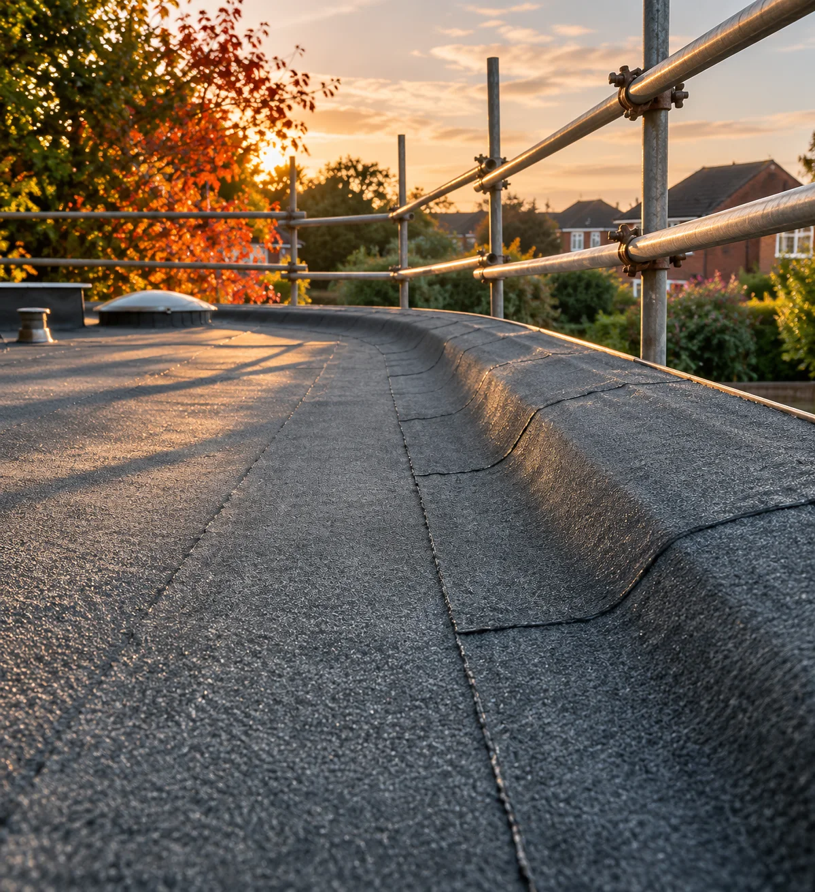
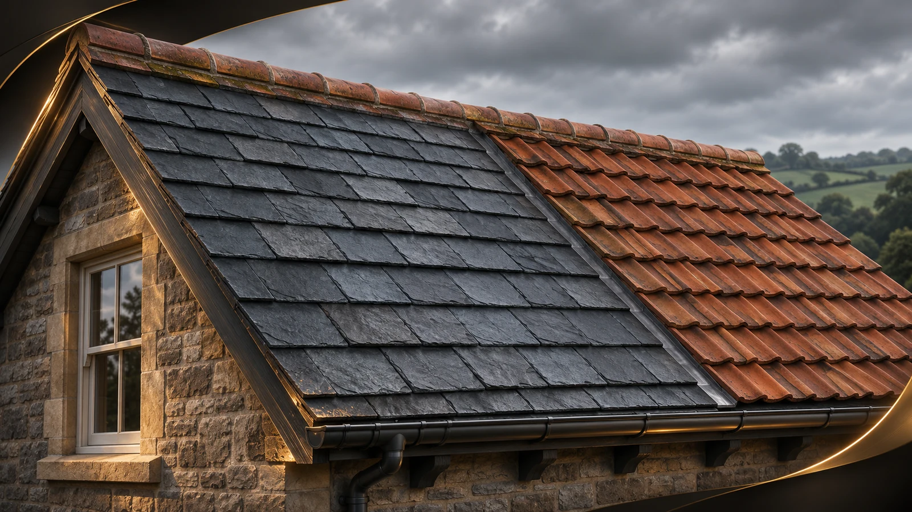
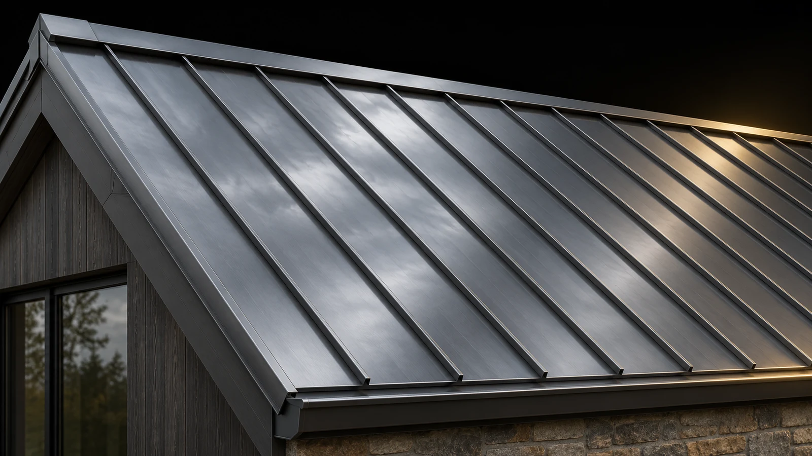
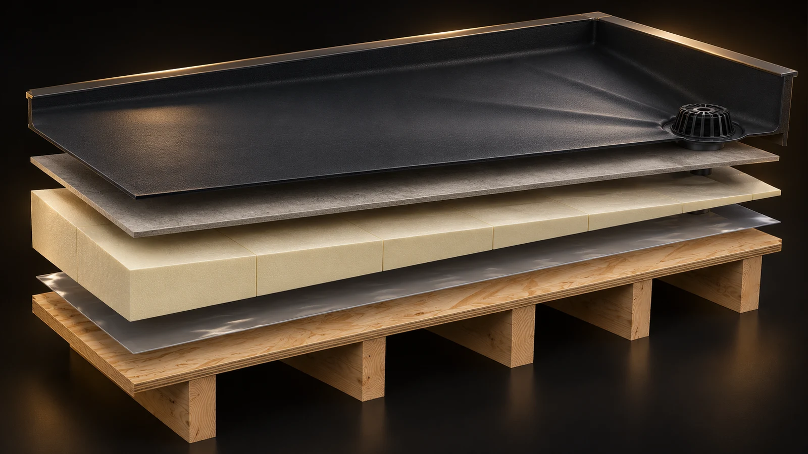

Three-layer felt roofing introduction
Learn the purpose of the layers, membranes, materials, decks and basic safety principles.
Start lessonFree introductions and safety guidance are available. The 24 new specialist courses and the separate £5 monthly Learning Pass are not yet for sale. See what is available now.
Explore structured learning in traditional built-up felt roofing, specialist insulation, drainage, detailing and safe working practices.

Use site photographs alongside the 3D learning visuals to put roof systems, outlets and perimeter details into context.


Start free. See what each specialist course is planned to teach before deciding whether it's right for you. UK-focused training information, not an accredited qualification.
Learn the purpose of the layers, membranes, materials, decks and basic safety principles.
Start lessonExplore roof-deck checks, substrate condition, OSB3 and plywood preparation.
Open lessonUnderstand why falls, outlets and sound detailing matter to roof performance.
Open lessonEquipment inspection, transformers, damaged leads, isolation and following manufacturer instructions.
Browse guidesCharging, storage, safe handling, PPE, tool condition and maintenance awareness.
Browse guidesEdge protection, safe access, fragile surfaces, hot works and fire prevention.
Browse guidesOne self-paced written lesson and knowledge check covering roof inspection, deck suitability, falls and drainage, system compatibility, safety planning and quality records. No recorded video is included in this version.
One-time price: £9.99. Available to UK customers.
View lesson and checkoutEight illustrated modules: reading tapered layouts; substrate and VCL checks; setting out; sequencing boards; outlets and sumps; falls and quality checks; manufacturer requirements; revision questions.
Proposed individual price: £9.99. Free interactive practice and illustrations can be explored; the full paid course and narrated video lessons are not yet on sale.
Explore interactive masterclassPlanned lessons on compatible systems, drainage interfaces, penetrations, detailing and inspection.
Proposed individual price: £9.99.
The planned Learning Pass is £5 per month. Roof Inspection and Planning is a separate £9.99 purchase. Membership checkout has yet to open.
The £5 monthly pass is planned only. Eligible content, exclusions, billing terms and cancellation controls must be finalised before subscriptions open.
Only to be considered once ten complete, eligible paid courses are available.
Felt systems, vapour control, falls, details and inspections.
Explore Built-Up RoofingRoof geometry, underlays, battens, slates, tiles and flashings.
Explore Tile & SlateProfiles, clips, standing seams, seals and safe maintenance.
Explore Metal & SheetSystem selection, substrates, primers, reinforcement, cure and quality checks.
Explore Liquid AppliedFree introductions are available. The 24 new specialist paid lessons are closed pending technical approval and secure checkout testing.
Build an understanding of substrate preparation, membrane compatibility, drainage, detailing and inspection.
Start the free introductionInterpret board schedules, check roof falls and review outlets, valleys and quality records.
Explore the masterclassUnderstand equipment inspections, working at height, PPE and torch-on fire precautions.
Read the safety guidesStart with the fundamentals, then move into specialist system design and inspection.
Every module distinguishes teaching examples from manufacturer-approved installation details.



The waterproofing layer is only one part of an assembly. Check the specified deck, insulation, vapour control, membrane system, perimeter details and documented fire requirements. Products that look alike may not be interchangeable. Record product references and obtain approval for substitutions.
No. Compatibility and the specification must be checked.
Distinguish surface condition from structural condition. Record existing roof build-up, signs of movement, moisture indications and previous repairs. Do not assume that visual inspection establishes loading capacity or concealed moisture; escalate uncertainty before specifying work.
No. A competent assessment and the approved design are required.
Trace the intended drainage path from high points to outlets. Compare observed low spots, thresholds, rooflights and perimeter transitions with the approved drawings. Photograph anomalies from safe access and avoid drawing conclusions about hidden defects without investigation.
Not necessarily; water may travel through the assembly.
Agree inspection hold points before work begins. Record product identification, approved drawings, photographic evidence, changes and outstanding defects. Make inspection records useful to the next person, not just a folder of unexplained photographs.
No. Record it and seek approval before continuing.
Further learning: HSE roof work · HSG33 roof safety · NFRC Safe2Torch. Follow the site-specific risk assessment, competent supervision and manufacturer’s instructions.